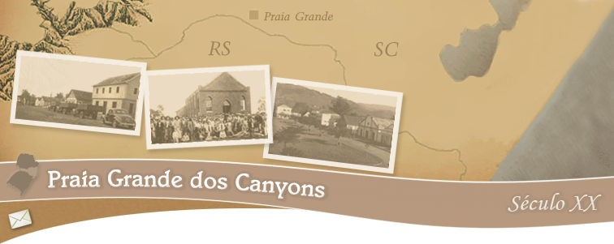

FAMILIAS
Os Pioneiros 19 de Julho A Política Transporte Estórias Enchentes
Itaimbézinho O Rio As Moradias A Praça
Formaturas Os Bailes As Festas Os Desfiles Esportes As Caçadas Curso Superior Cultura Curiosidades Bandas
50 60 70 80
Tenente Cachoeira Três Irmãos Figueira Rio Canoa Poço Negro Rua Nova
Links Livro de Comentários |
Vídeos da Câmara de Vereadores de Praia Grande: |